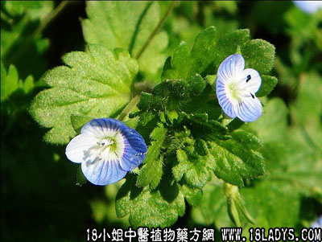

雾水葛(中药材植物名:雾水葛)(植物科目:荨麻科)

别名：啜脓羔。
植物名：雾水葛。
生长环境：本品为多年生草本，生长于空旷地上或稍隐蔽的灌木林下。
分布：广州近郊常见，此外，亚洲热带地区亦有。
入药部分：全株。
采集期：全年。
自采地点：郊外、湿地、沟边。
性味：性凉、味淡。
功能：解毒去湿、敷疮有强大吸脓之力。
主治、用量和用法：1、风火牙痛：生用1至2两，清水煎服；2、疮疡：生用根叶捣烂外敷；3、白浊：生用1至1两半，猪瘦肉适量，清水煎服。
验方（治风火牙痛方）：雾水葛2两、咸瘦肉适量，煲粥食。
（方解）雾水葛能去湿解毒，既可作内治，又可外敷，溃疡有强大吸脓作用，故有”啜脓羔”之名。治风火牙痛，配咸瘦肉煎粥，为咸凉降火之法。民间有曾制售此粥以治牙痛者，效果良好。